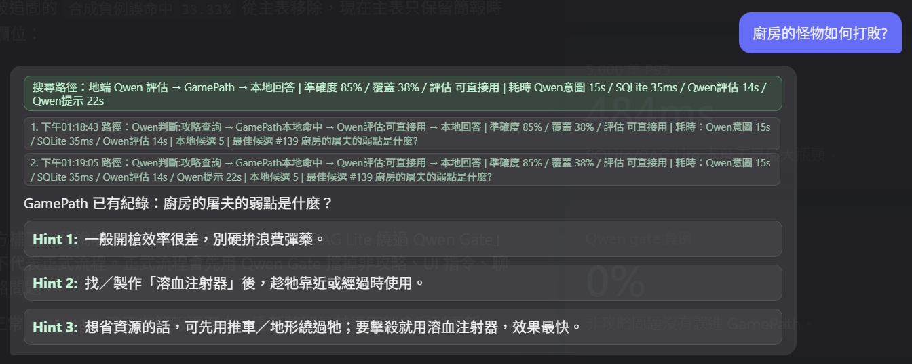
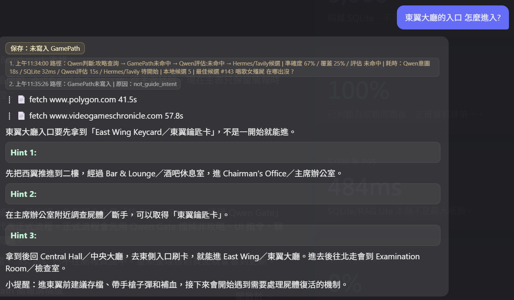
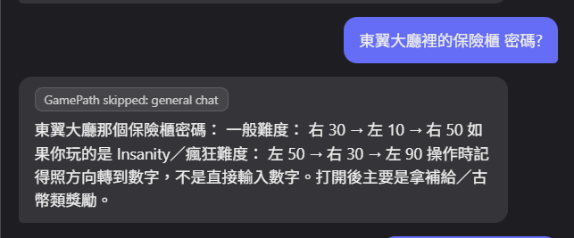

Game Companion / GamePath Briefing
GamePath：讓玩家不用跳出遊戲查攻略
這套架構把「常見攻略」沉澱在本地，用地端 Qwen 判斷要不要查，
用 SQLite/RAG Lite 快速找答案；本地不足時才交給雲端 Hermes Agent GPT5.5 與 Tavily。
Cloud + Local Hybrid
iGPU Qwen Router
SQLite FTS5
RAG Lite
Hermes GPT5.5
LLM-wiki Ready
核心目的：
玩家卡關時不用離開遊戲去翻長篇攻略；常見問題走本地 GamePath 快速回答， 本地不知道或需要最新版資訊時才上雲，降低延遲、成本與暴雷風險。
1. 玩家痛點：查攻略會打斷遊戲
以前的流程
- 玩家卡住。
- Alt + Tab 切出去。
- 搜尋攻略、比對版本、找關鍵段落。
- 回到遊戲時已經失去節奏。
GamePath 的流程
- 玩家直接問遊戲感知。
- 系統先查本地攻略庫。
- 用 Hint 1/2/3 回答，不一次暴雷。
- 本地沒有才上網補資料。
簡單例子：
玩家問「廚房那個怪物還是很難打」，系統應該先找廚房怪物相關資料，
但回答方式要換成「打法建議」，而不是只重複路線攻略。
2. 總體架構：地端快取 + 雲端補強
Step 1
玩家輸入
文字、語音、截圖或 HUD 需求進入遊戲陪伴前端。
Step 2
地端模型意圖
用 iGPU 判斷這句話是攻略、聊天、UI 指令、截圖 HUD，還是需要上網。
Step 3
GamePath
攻略問題才查本機資料庫
Step 4
Hermes Agent
本地資料信心不足、最新版、patch 或複雜推理時，交給 Hermes GPT5.5 / Tavily。
Step 5
寫回本地
只有可重用的低劇透提示，才保存成 SQLite + Markdown。
講法：
地端負責「快、便宜、可離線」，雲端負責「查新資料、複雜推理、整理答案」。
3. 三種玩家問法，走三條不同路
攻略問題
「唱歌的女殭屍在哪？」
Qwen 判斷為 gamepath_query，查 GamePath，本地命中後用 Hint 回覆。
UI 指令
「調整遊戲感知視窗透明度」
Qwen 判斷為 ui_command，不查攻略庫，交給前端安全動作。
最新版問題
「最新 patch 怪物有改弱點嗎？」
Qwen 判斷為 hermes_web，跳過本地舊資料，交給 Hermes/Tavily。
重點：
不是每句話都查 SQLite，也不是每句話都上雲。Qwen 的價值是先判斷「該去哪裡找」。
4. RAG Lite 簡單的方式理解
像一本有索引的攻略筆記
- 格式 Markdown 是完整筆記。
- SQLite、FTS5 則負責建立索引、快速搜尋並篩選正確段落
- Backend Evaluator 先用硬性規則打分數及排序 (關鍵字核心詞重疊、Tag、資料範圍...)
- 玩家問：「廚房的怪物怎麼打？」
- match_coverage 看重要詞是否被覆蓋：廚房、怪物、打法、弱點、攻略。
- 候選 A：「廚房屠夫弱點是肩膀，建議用溶血注射器。」=> 覆蓋高。
- 候選 B：「廚房旁邊可以取得鑰匙。」=> 只有廚房，覆蓋不夠。
- core_overlap 看核心意思：A 是怪物打法所以高；B 是解謎/路線所以低。
- 最後模型依據分數只看相關段落，整理成玩家能用的提示。
5. direct / summarize / miss 定義
direct (score >= 0.74)
本地資料很明確，可以直接回答。
「這把鑰匙用在哪？」
直接給低劇透提示。
summarize (0.46 <= score < 0.74)
本地有資料，但資料比較長，要濃縮成玩家能懂的說法。
「這關怎麼走？」
從長攻略抽出 3 個步驟：
1. 從中央大堂進入西側走廊，先不要進餐廳，沿著左邊牆走到廚房。
2. 廚房內會遇到拿刀的怪物，建議不要硬打，先繞過它到餐廳。
3. 餐廳桌上可以拿到手槍彈藥，接著從餐廳北側門出去。
4. 出去後會到樓梯間，上二樓前先確認背包裡有紅寶石。
5. 如果沒有紅寶石，回到主廳右側的理事長辦公室取得。
miss (score < 0.46)
本地不夠或候選很像硬湊，才交給 Hermes / Tavily。
「最新版是不是改了？」
需要查網路。
Hint 1
先給方向，不暴雷。
Hint 2
給區域、路線 或 互動物件。
Hint 3
接近答案，但仍避免整段劇透。
6. 什麼資料會寫回 GamePath？ (目前硬性規則)
會保存
- 道具用途。
- 任務下一步。
- 怪物打法或弱點。
- 地圖、路線、謎題提示。
- Hermes 查網路後濃縮出的可重用攻略。
不保存
- 一般聊天。
- UI 指令，例如打開視窗、調透明度。
- 不確定或 timeout 的答案。
- 只有網址或來源清單。
- 和既有條目高度重複的內容。
簡單例子：
「廚房怪物弱點是什麼？」查到後可以存。
「幫我打開 GamePath 視窗」只是操作，不會存。
7. Benchmark 與 Qwen Gate 實測
單純地端資料庫搜尋
最大壓測資料量
5,000
隔離 SQLite，不污染正式 GamePath。
Top-1 準確度
100%
隔離合成壓測正例，已判定為攻略查詢後的本地搜尋。
搜尋 P95
484ms
隔離合成 5,000 筆資料、108 次正例查詢。
重複寫入辨識
100%
相似 Hermes 回答不再洗版新增。
Benchmark 摘要：本地搜尋規模測試
以下只看「已被 Qwen 判定為攻略查詢」之後的 SQLite / RAG Lite 搜尋表現。
| 資料量 |
DB Size |
正例 Top-1 |
搜尋 P95 |
去重成功 |
| 100 |
876 KiB |
100% |
101.5 ms |
100% |
| 500 |
3,904 KiB |
100% |
161.5 ms |
100% |
| 2,000 |
15,088 KiB |
100% |
266.4 ms |
100% |
| 5,000 |
37,388 KiB |
100% |
484.2 ms |
100% |
負例命中率 33.33%：純 SQLite/RAG Lite 會出現誤命中，意思是「不能每句話都無腦查本地資料」。
地端模型意圖判定
Qwen 正例路由
100%
30 筆攻略問題全判為 gamepath_query。
Qwen Gate 後 Top-1
100%
Qwen 只決定是否查；檢索保留玩家原始問句。
負例阻擋率
100%
8 筆非本地攻略問題都沒有進 SQLite。
Qwen 平均耗時
13.3s
iGPU 地端模型；SQLite 本身平均 52.2ms。
負例樣本：Qwen 是否成功擋住 GamePath
| 負例類型 |
玩家問法 |
Qwen route |
Qwen 後結果 |
純 SQLite 可能結果 |
| 一般聊天 |
我今天心情不好，先陪我聊一下。 |
general_chat |
阻擋 GamePath |
誤命中 豪宅昏暗走廊 |
| UI 指令 |
打開 GamePath 視窗讓我看資料庫。 |
ui_command |
阻擋 GamePath |
誤命中 全文主要路線整理 |
| 透明度設定 |
把視窗透明度調到 70%。 |
ui_command |
阻擋 GamePath |
Miss |
| 最新版網路問題 |
最新 patch 廚房屠夫弱點有改嗎？幫我查網路。 |
hermes_web |
不查本地舊資料，交給 Hermes/Tavily |
誤命中 廚房屠夫弱點 |
| 玩家記憶 |
幫我記錄我剛拿到紅寶石和地下室鑰匙。 |
task_memory |
阻擋 GamePath |
誤命中 公寓地下停車場 |
| HUD 標記 |
幫我看畫面並圈出門在哪。 |
screenshot_hud |
阻擋 GamePath |
Miss |
| 明確否定搜尋 |
先不要查攻略，我只是想確認你有沒有聽到。 |
general_chat |
阻擋 GamePath |
誤命中 不要擊殺喪屍 |
| 架構說明 |
現在 GamePath 架構跟 Hermes 的關係再說明一次。 |
general_chat |
阻擋 GamePath |
誤命中 唱歌女殭屍 |
簡單說：
本地搜尋速度和命中率已足夠；Qwen Gate 的價值是把聊天、UI、記憶、HUD、最新版網路問題擋在 GamePath 之外。
8. Demo：實際問答畫面
Demo 1：GamePath 本地命中，整理成 Hint 1 / 2 / 3
玩家問「廚房的怪物如何打敗？」後，系統走地端 Qwen 評估 -> GamePath -> 本地回答，並把資料整理成可操作提示。

Demo 2：本地不足時，Hermes / Tavily 補資料
玩家問「東翼大廳的入口怎麼進入？」時，本地資料不足，流程改走 Hermes / Tavily，最後仍用低劇透 Hint 格式回到玩家介面。

Demo 3：直接據透
玩家問「保險櫃密碼」AI web搜尋後直接據透

9. 結論
優勢
- 本地命中時，不用每次查網路。
- SQLite + Markdown 易於打包與離線使用。
- iGPU 友善，不需要額外 embedding ,Rerank model。
- 低劇透 Hint 格式比較符合遊戲體驗。
限制
- Qwen gate 有延遲，平均約 13.3 秒。
- 不是完整語意向量搜尋，仍有 miss 的可能。
- 資料量變大後，需要版本、可信度、過期資料治理。
未來銜接 AI Infra (LLM-wiki)
- 現在：GamePath 是可查攻略提示庫。
- 中期：Markdown notes及圖片變成 wiki 頁面。
- 長期：AI Infra 的銜接應用